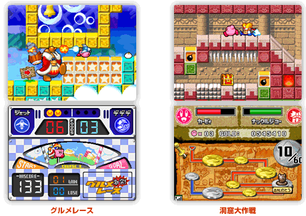

本作は「カービィ」シリーズ共通の”敵を飲み込み、能力をコピーして自分のものにできるシステム”はそのままに、スーパーファミコンで発売された『星のカービィ スーパーデラックス』を、よりパワーアップしたリメイクタイトルになっています。
オムニバス形式でゲームモードを選ぶことができ、『スーパーデラックス』がシナリオ6種類+隠し１つの計7種類だったんですが、本作ではそれが全部で10種類以上になり、ゲームのバリエーションも増えました。
最初に選択できるのは、「はるかぜとともに」というシナリオだけになっています。これは、とにかく余計なものを取っ払ったとてもシンプルなカービィを遊べる、「カービィの教科書」みたいなもので、ここでカービィがどういうゲームなのか、カービィの醍醐味を感じていただければと思います。
その後、レース（グルメレース）やお宝探し（洞窟大作戦）でカービィの操作に慣れていただいてから、シナリオを奥深くしていくような作りになっています。最初から10種類できるようになっているのではなく、ゲームを進めていくとシナリオが増えていくようになっていて、やっていくと「まだあるんだ」と驚いてもらえると思います。

「はるかぜ」でカービィの醍醐味を味わって欲しいという言葉がありましたが、一言でいうと「カービィ」の魅力ってどこだと思われますか？
単純明快で気軽にできるところじゃないですかね。他のゲームはシステムが複雑になったりしていますけど、『カービィ』の基本システムはずーっと一緒なんですよ。どんな新しい要素が入ろうとも、基本的に「すってはく」という操作だけで、クリアできてしまうシンプルさですね。
小さい子供さんもプレイできて、あまりゲームをやらないお父さん、お母さんも子供と一緒に遊べるそういう間口の広さも魅力だと思っています。
シンプルであるというところですね。ただシンプルでありながら奥深いゲーム性も持っていて、一見すると、子供向けと捉えられがちなんですけど、子供だけではなく、大人がやっても楽しいゲームにしようとしています。キャラクターは可愛いけど、大人と子供、あるいは初心者と上級者の共存が可能なタイトルだと思っているんですよ。